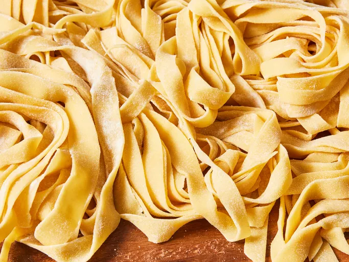

Lasagna

Ingredients
- Flour: This homemade pasta recipe starts with two cups of all-purpose flour.
- Eggs: Eggs lend fat and moisture to the pasta dough.
- Oil: Two tablespoons of olive oil add moisture and help the dough come together.
- Salt: A teaspoon of salt takes the flavor up a notch.
- Water: Add just enough water to form a smooth, thick dough.
Steps
- Make the dough.
- Turn the dough out and knead it for 10 minutes.
- Let the dough rest.
- Divide the dough into balls.
- Use a pasta machine to roll and cut the dough into desired shapes.